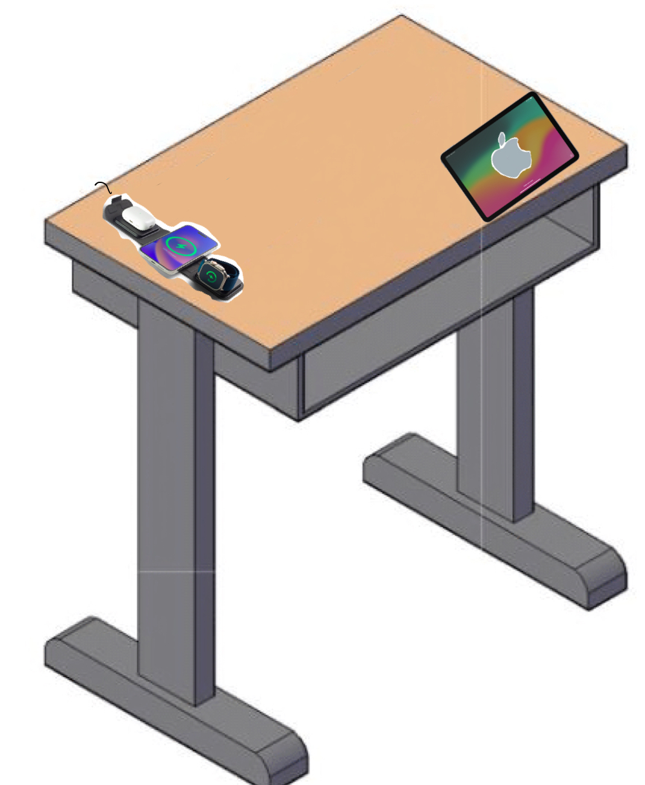
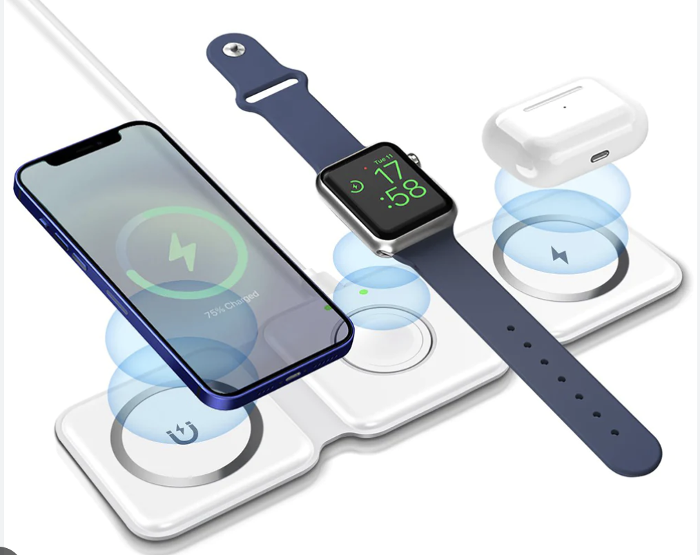

By Saumick Pradhan
Here is the iSmart Graphic
 
iSmart Table MagSafe Charging Pad
Here is the iSmart Table in action
1. Select a User Device first. You will be only able to access that User in the UI for Privacy.
2. User Profiles are set and they affect user preferences for all the Apps. Double Click to Access a User.
3. You can use the Timer, StandUp, Music and Notes App which are Pre Configured as per User's Preferences
4. The Notification Widget shows the preferred messaging App for each User.
5. The Notifications, notes, music, calendar and battery percentages are synced from User's Phone (device).
6. User's phone is placed on the Charging Pad and is used for Profile Authentication.
7. Interact with the Power Botton and Hight adjustment slider as well.